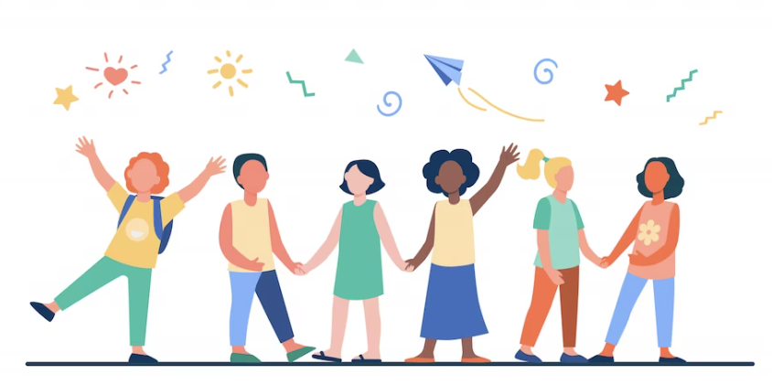

A fin de brindar una experiencia inclusiva, nuestra aplicacion cuenta con opciones de accesibilidad variada para distinto tipo de publico. Puedes realizar los ajustes a tu medida. Accede a estas opciones en cualquier momento haciendo click en el logo en la esquina superior derecha
Los invitamos a ser parte de nuestra comunidad
Te traemos información de calidad para acompañarte en cada etapa de tu vida.
